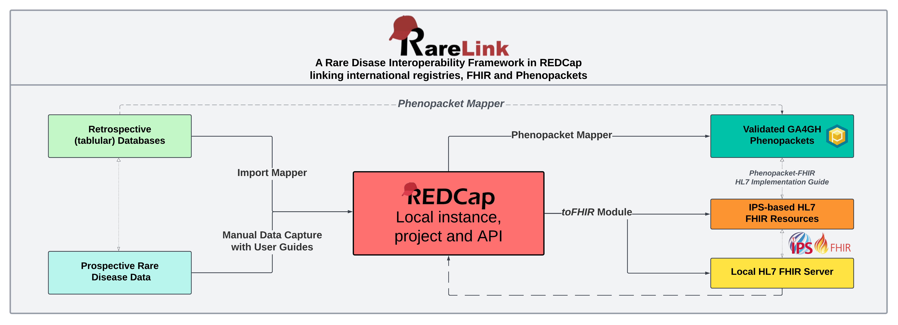

RareLink Overview
Warning
RareLink v2.0.0 is under development. Please Contact us before using it to ensure you have the latest updates and guidance.
RareLink aims to maximise the utility of REDCap by providing a comprehensive framework designed specifically for rare disease (RD) research and care. At the core of RareLink is this documentation, the RareLink instruments that are based on the RD-CDM, its user guides and the surrounding preconfigured pipelines and software architecture. This framework ensures that data capture is both consistent and compliant with HL7 FHIR and GA4GH Phenopackets, without the need for additional coding or mapping. As a result, RareLink allows researchers and clinicians to collect and process rare disease data seamlessly within the REDCap environment.
Note
You will need your own REDCap instance to deploy the RareLink framework. See the Set up a REDCap Project for more information.
RareLink Framework components
Semi-Automatic Import
In many Rare Disease specialised centres, registries or hospitals, data is stored in tabular databases (e.g. Excel). RareLink’s Import Mapper that is utilising the Phenopacket Mapper API can be used to convert and import data from these databases into the REDCap RareLink format and your local REDCap project.
Continue here…
Guide for the Set up the REDCap API
User guide for Semi-Automatic Data Capture
Manual Data Capture
RareLink provides a preconfigured data collection sheets based on the RD-CDM and user guides for manual data capture to ensure precision and correctness of data captured. Further, RareLink defines guidelines for developing more specialised REDCap sheets around the RD-CDM so that the data captured can also be processed by our framework to generate FHIR resources and Phenopackets.
Continue here…
Guide to install the Set up the RareLink Framework
Guide to develop the Set up a REDCap Project
User guide for Guide for Manual Data Capture
Local REDCap Project Setup and API
RareLink is designed to be deployed and installed in a local REDCap instance. Using the guidelines provided, or using our preconfigured RareLink-REDCap and setting up the RareLink API, you can ensure that the data captured is compliant with the our framework to generate FHIR resources and Phenopackets.
Continue here…
How to set up the Set up the Data Dictionary
How to deploy the Set up the REDCap API
RareLink & toFHIR
RareLink utilises toFHIR from SRDC to convert the data captured in REDCap into FHIR resources. The RD-CDM and the corresponding RareLink instruments are preconfigured within our GitHub repository to generate International Patient Summary (IPS) FHIR resources and FHIR v4.0.1 resources automatically. HERE you can find more information on how to set up the RareLink API and toFHIR module in your local REDCap project to generate FHIR resources.
Continue here…
How to set up the Set up the RareLink Framework and the Set up the REDCap API
Guide to 4_4
toFHIR Repository: https://github.com/srdc/tofhirs
Website: https://onfhir.io/tofhir/
RareLink & Phenopackets
RareLink utilises the Phenopacket Mapper to convert the data captured in REDCap into Phenopackets. The RD-CDM and the corresponding RareLink instruments are preconfigured within our GitHub repository to generate Phenopackets automatically.
Continue here…
How to set up the Set up the RareLink Framework and the Set up the REDCap API
Guide to Generate Phenopackets
Phenopacket Mapper Repository: https://github.com/BIH-CEI/phenopacket_mapper
Documentation: https://bih-cei.github.io/phenopacket_mapper/latest/